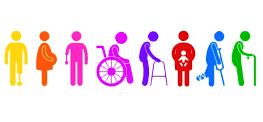
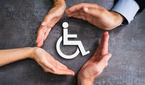

Direitos das Pessoas com Deficiência
As pessoas com deficiência têm direito a igualdade de oportunidades, acessibilidade, saúde, educação, trabalho, previdência social, entre outros.
- Acessibilidade: Garantia de adaptações em espaços públicos e privados, como rampas, elevadores, sinalização tátil e banheiros adaptados.
- Transporte Público: Isenção de tarifas para PCDs em diversos estados e municípios, além de prioridade no embarque e veículos adaptados.
- Educação Inclusiva: Direito a matrículas em escolas regulares, com suporte especializado e recursos adaptados para facilitar o aprendizado.
- Mercado de Trabalho: Cotas obrigatórias para PCDs em empresas com mais de 100 funcionários e direito a condições de trabalho adequadas.
- Atendimento Prioritário: Atendimento preferencial em órgãos públicos, bancos, supermercados e outros estabelecimentos comerciais.
- Saúde e Reabilitação: Acesso a medicamentos gratuitos, próteses, cadeiras de rodas e tratamentos especializados pelo SUS.
- Isenções Fiscais: Benefícios tributários na compra de veículos adaptados e em outras aquisições essenciais.
- Moradia: Prioridade em programas habitacionais do governo e acessibilidade garantida em novos empreendimentos.
- Benefício de Prestação Continuada (BPC/LOAS): Garantia de um salário mínimo mensal para pessoas com deficiência em situação de vulnerabilidade financeira.
Isenção de Impostos
A isenção de impostos para pessoas com deficiência (PcD) é um benefício previsto na lei que permite a redução ou isenção total de determinados tributos para pessoas que possuem deficiência física, sensorial, intelectual ou mental, conforme critérios propostos.
- Isenção de IPI: Pessoas com deficiência têm direito à isenção do Imposto sobre Produtos Industrializados (IPI) na compra de veículos adaptados, desde que atendam aos requisitos legais.
- Isenção de ICMS: Dependendo da legislação estadual, é possível obter isenção do Imposto sobre Circulação de Mercadorias e Prestação de Serviços (ICMS) na compra de veículos e outros produtos essenciais.
- Isenção de IPVA: O Imposto sobre a Propriedade de Veículos Automotores (IPVA) pode ser isento para pessoas com deficiência, variando conforme o estado e a condição do veículo.
- Outras Isenções: Em alguns estados, a isenção também pode abranger outros impostos, como o IPI em compras de equipamentos e produtos de uso diário para facilitar a mobilidade e acessibilidade.
Benefícios Previdenciários
PCDs têm acesso a benefícios como aposentadoria especial e o Benefício de Prestação Continuada (BPC/LOAS), desde que cumpram os requisitos.
- Aposentadoria Especial: Pessoas com deficiência que atendem aos critérios estabelecidos podem se aposentar de forma antecipada, com tempo de contribuição reduzido.
- Benefício de Prestação Continuada (BPC/LOAS): Garantia de um salário mínimo mensal para pessoas com deficiência que se encontrem em situação de vulnerabilidade social e econômica, sem a necessidade de contribuição prévia ao INSS.
- Auxílio Doença: Pessoas com deficiência podem ter direito ao auxílio-doença caso comprovem incapacidade temporária para o trabalho, com base em avaliação médica do INSS.
- Pensão por Morte: Benefício destinado aos dependentes de uma pessoa com deficiência, caso ela venha a falecer, proporcionando o direito à continuidade da renda familiar.